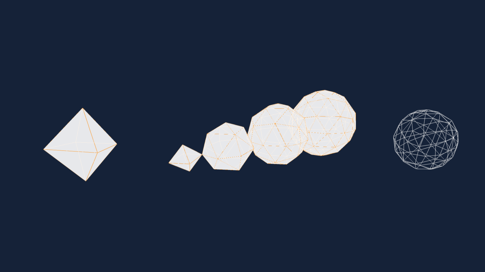

PROJECT 1 - EVOLUTION
This algorythm generates different Polyhedrons in a specific array based on varying user inputs. It is supposed to show the evolution in complexity of a single minimalistic form. The more Polyhedrons are added, the closer and closer the form becomes to a simple sphere.
A polyhedron is created which is then translated along an axis. The newly generated Polyhedrons are changed in complexity, size and rotations based on user inputs. As soon as the number of iterations changes, the update function renews the generated meshes.

By moving the different sliders, you can play with the repetitions. You can change the distances rotation and display method.